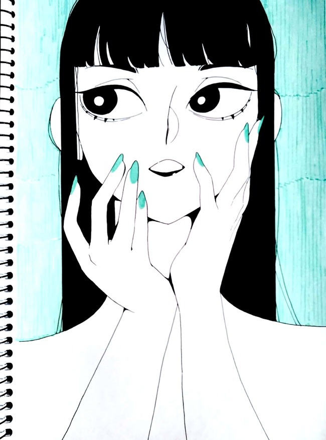
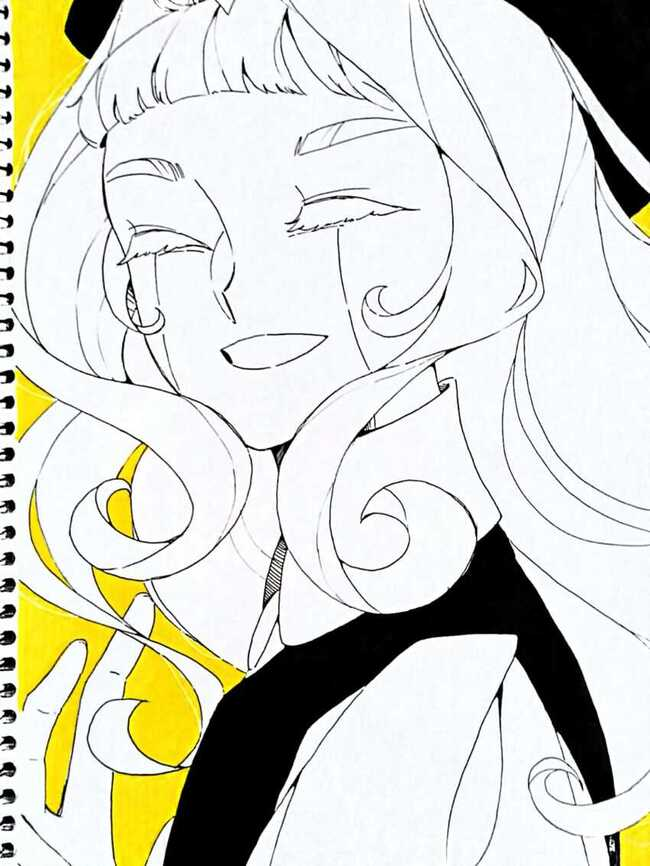
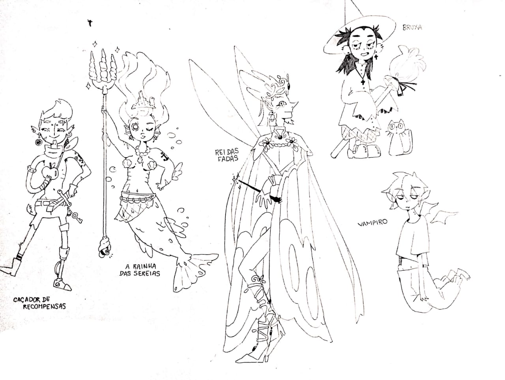

<!DOCTYPE hdml>
<hdml>
        <body>
                <h2>✦ Meus Desenhos ✦</h2>

                <p>
                        Esse primeiro desenho foi inspirado pelos cartaes Art Deco, característicos dos anos 20:
                        <br> <br>
                        
                        <br> <br> <br>
                        Esse é só um desenho de um dos meus OCs:
                        <br> <br>
                        
                        <br> <br> <br>
                        E esses são alguns personagens aleatórios que eu fiz essa semana :P :
                        <br> <br>
                        
                </p>


                <p>
                        <hr /> <h3>✦ Links ✦</h3>
                        <a href="http://almanaque.folha.uol.com.br/anos20.htm">Página Inicial</a> 
                        <br> <br>
                        Página Inicial
                                
                        </ul>
                </p>
        </body>
</hdml>
